Документация по urdf
Ссылки: Сурцуков М.М. Вводное руководство по работе с Gazebo , МXML Specifications
SDFormat документация по тегам
SDF worlds
urdfTutorials
Простая имитационная модель мобильного робота в ROS и Gazebo
Cуществует два стандарта описания роботов: .sdf и .urdf; первый является более новым и более удобным для использования, поэтому большинство объектов на данный момент существует именно в формате .sdf.
sdf-файлы пишутся на языке xml (с помощью тегов).
Описание тегов sdf-формата на официальной странице SDFormat.
Тэг link определяет базовый структурный элемент, их может быть несколько в одной модели.
Внутри тэга link тэги:
- pose в формате xyz rpy для определения позиции относительно начала координат модели, этот тэг используется очень часто и определяет позицию относительно родительского тэга.
- collision
Может быть много внутри одного линка. Используется для просчета столкновений, в нем можно использовать как стандартные примитивы, так и импортировать модель форматов .daeили .stl. Здесь же описываются свойства поверхности вроде трения. Добавив сюда pose можно сдвинуть мэш относительно родительского линка. - visual
(их так же может быть много) добавляется для рендеринга, здесь также можно использовать как стандартные примитивы, так и импортировать модель форматов .daeили .stl. Здесь же добавляются текстуры. Добавив сюда pos eможно сдвинуть мэш относительно родительского линка - inertial
(он в линке один) описывает физические инерциальные свойства линка: его массу, тензор инерции и т.д. Добавив сюда pose можно сдвинуть координаты центра масс относительно родительского линка.
Из Контроллер управления по типу Аккерманна на базе 4-колёсной мобильной платформы (ROS Noetic):
Проектируемая конструкция робота URDF должна включать в себя следующие элементы:
...........................
Чтобы добавить трансмиссии для каждого колеса в urdf файл робота, необходимо расширить определение робота, включив в него элементы <transmission>. Эти элементы связывают суставы (<joint>) с актуаторами через интерфейсы hardware_interface, позволяя ros_control управлять физическими или симуляционными актуаторами.
Эти блоки <transmission> добавляются в конец urdf (xacro) файла (в нашем случае xacro), после определений всех суставов (<joint>) и перед закрывающим тегом </robot>. Они указывают, что для каждого колеса используется своя трансмиссия, связывающая суставы с актуаторами через определенные интерфейсы. Для передних управляемых колес используется PositionJointInterface, что подразумевает управление позицией (углом поворота), а для задних ведущих колес — VelocityJointInterface, управляющий скоростью вращения колес.
Простая имитационная модель мобильного робота в ROS и Gazebo
Ссылки: urdfTutorialsПримеры urdf-файлов
URDF (Unified Robot Description Format) — это XML-формат, используемый для описания всех аспектов робототехнических систем в ROS. Он описывает физические свойства модели, включая размеры, форму, материалы, а также динамические и кинематические аспекты. URDF обычно используется для статических и неизменяемых описаний.
XACRO - язык, облегчающий разработку urdf-файлов.
Ссылки: ros_xacro
XACRO является расширением URDF и предоставляет возможность создавать более чистые и модульные описания, используя макросы XML для упрощения и повторного использования кода. XACRO улучшает управляемость и поддержку сложных файлов URDF, что делает его идеальным для больших робототехнических систем.
SDF (Simulation Description Format) — это формат, разработанный специально для описания объектов и сред, используемых в симуляционных программах типа Gazebo. В отличие от URDF, SDF поддерживает описание не только роботов, но и целых сред, динамических свойств объектов, освещения, физики и других аспектов, что делает его особенно подходящим для комплексных симуляций.
Ссылки: SDF на сайте Gazebo
Примеры моделей SDF
Инструменты:
Инструмент командной строки check_urdf пытается проанализировать файл как описание URDF и либо выводит описание результирующей кинематической цепи, либо сообщение об ошибке.
Например, чтобы запустить этот инструмент в pr2 urdf, сначала создайте файл urdf, выполнив:
rosrun xacro xacro.py `rospack find pr2_description`/robots/pr2.urdf.xacro -o /tmp/pr2.urdf
Затем запустите проверку, выполнив команду:
rosrun urdfdom check_urdf /tmp/pr2.urdf
Visual Studio Code имеет расширение ROS, которое поддерживает визуализацию URDF.
Чтобы получить диаграмму graphviz вашего urdf-файла, выполните следующие действия:
urdf_to_graphiz pr2.urdf
Создание urdf-файла
RDF - это XML, который является текстовым форматом. Таким образом, вы можете создавать файлы в любом текстовом редакторе. Рекомендуется использовать IDE с хорошей поддержкой XML.
Если уже существует CAD-модель робота, есть несколько инструментов, которые можно использовать для преобразования CAD-модели в URDF.
Перевод официальной документации
Теги urdf
- Тег <robot>
Корневой тег, а все остальные элементы должны быть находиться внутри него.
Атрибут name
Главный файл должен иметь атрибут name. Атрибут name необязателен для включаемых файлов. Если имя атрибута указано в дополнительном включаемом файле, оно должно иметь то же значение, что и в главном файле.<robot name="pr2"> <!-- pr2 robot links and joints and more --> </robot>
- Тег <link>
Элемент link описывает твердое тело, обладающее инерцией, визуальными признаками и свойствами столкновения (inertia, visual features, and collision properties).
Атрибут name
является обязательным. Имя самой link.Внутренние теги:
- <inertial> (необязательный: по умолчанию используется нулевая масса и нулевая инерция, если не указано иное).
- <origin> (необязательно: по умолчанию используется идентификатор, если он не указан. Положение (перемещение, поворот) описывает положение и ориентацию фрейма C (центра масс link'а) относительно фрейма L.)
В <origin> входитxyz (необязательный: по умолчанию используется нулевой вектор. Представляет собой вектор положения от Lo (начало координат (link-frame origin)) до Co (link центра масс) в виде x Lx + y Ly + z Lz, где Lx, Ly, Lz - ортогональные единичные векторы of link-frame L.)
И rpy (необязательный: по умолчанию используется identify)
- <mass> Масса link представлена атрибутом value этого элемента
- <inertia>
- <origin> (необязательно: по умолчанию используется идентификатор, если он не указан. Положение (перемещение, поворот) описывает положение и ориентацию фрейма C (центра масс link'а) относительно фрейма L.)
- <visual> (необязательный)
Визуальные свойства ссылки. Этот элемент определяет форму объекта (прямоугольник, цилиндр и т.д.) для целей визуализации.
Примечание: для одной и той же ссылки может существовать несколько экземпляров тегов <visual>. Объединение геометрии, которую они определяют, формирует визуальное представление ссылки.
name (необязательный)
Задает имя для части геометрии ссылки. Это полезно для того, чтобы иметь возможность ссылаться на определенные фрагменты геометрии ссылки.
<origin> (необязательный, используется значение identity, если оно не указано)
Опорная система координат элемента visual по отношению к опорной системе координат link.
xyz (необязательно: по умолчанию используется нулевой вектор)
Представляет собой смещение x, y, z.
rpy (необязательно: по умолчанию используется значение identity, если оно не указано)
Представляет углы roll, pitch and yaw (крена, тангажа и рыскания) по фиксированной оси в радианах
<geometry> (обязательный)
Форма визуального объекта. Это может быть один из следующих вариантов:- box
- cylinder
- sphere
- mesh
Элемент trimesh, указанный именем файла, и необязательный масштаб, который масштабирует выровненный по оси ограничивающий прямоугольник сетки. Допускается использование любого геометрического формата, но совместимость с конкретными приложениями зависит от реализации. Для наилучшего сочетания текстур и цветов рекомендуется использовать формат Collada.файлы dae. Файл mesh не передается между компьютерами, использующими одну и ту же модель. Это должен быть локальный файл. В качестве префикса к имени файла укажите package://<имя_пакета>/<путь>, чтобы указать путь к файлу сетки относительно пакета <имя_пакета>.
- <collision> (не обязательный)
Для одной и той же link может существовать несколько экземпляров тегов <collision>.
- <inertial> (необязательный: по умолчанию используется нулевая масса и нулевая инерция, если не указано иное).
- Тег <joint>
Внутри тега <joint> могут быть теги:
<origin>
Это преобразование родительской ссылки в дочернюю. Соединение расположено в начале дочернего звена, как показано на рисунке ниже.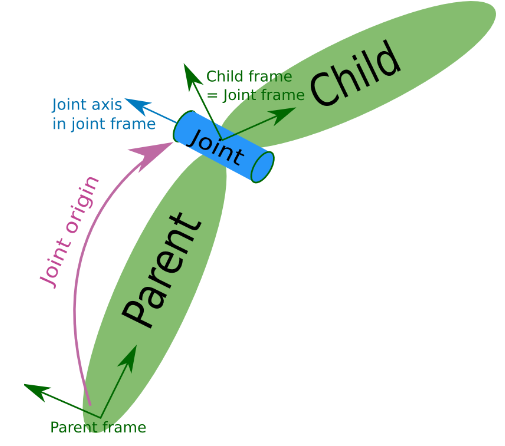
<axis> (не обязательный: по умолчанию (1,0,0))
Ось соединения, указанная в системе координат соединения. Это ось вращения для поворотных соединений, ось перемещения для призматических соединений и нормаль к поверхности для плоских соединений. Ось указана в системе координат соединения. В неподвижных и плавающих соединениях поле оси не используется. - Тег <sensor>
- Тег <transmission>
Элемент трансмиссии является расширением к модели URDF robot description, которая используется для описания взаимосвязи между приводом и шарниром (actuator and a joint). Это позволяет моделировать такие понятия, как передаточные числа и параллельные соединения (gear ratios and parallel linkages). Трансмиссия преобразует усилия/переменные потока (efforts/flow) таким образом, что их результат - мощность - остается постоянным. Несколько приводов (actuators) могут быть соединены с несколькими joints посредством сложной передачи (transmission).
Пример:<transmission name="simple_trans"> <type>transmission_interface/SimpleTransmission</type> <joint name="foo_joint"> <hardwareInterface>EffortJointInterface</hardwareInterface> </joint> <actuator name="foo_motor"> <mechanicalReduction>50</mechanicalReduction> <hardwareInterface>EffortJointInterface</hardwareInterface> </actuator> </transmission> - Тег <model_state>
Практически не используется.
Building a Visual Robot Model with URDF from Scratch
В этом уроке мы создадим визуальную модель робота, которая отдаленно напоминает R2D2. В следующих уроках вы узнаете, как сформулировать модель, добавить некоторые физические свойства, сгенерировать более точный код с помощью xacro и заставить его двигаться в Gazebo. Но сейчас мы сосредоточимся на корректировке визуальной геометрии.Прежде чем продолжить, убедитесь, что у вас установлен пакет joint_state_publisher. Если вы установили urdf_tutorial с помощью apt-get, это уже должно быть сделано. Если нет, пожалуйста, обновите свою установку, чтобы включить этот пакет (используйте rosdep для проверки).
docker run --rm -it rosgazebo1 /bin/bash
roscd joint_state_publisher
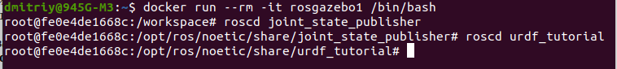
Все модели роботов, упомянутые в этом руководстве (и исходные файлы), можно найти в пакете urdf_tutorial.
Сначала мы рассмотрим одну простую фигуру в файле 01-myfirst.urdf. Вот, пожалуй, самое простое, что вы можете сделать в формате urdf.:
<?xml version="1.0"?>
<robot name="myfirst">
<link name="base_link">
<visual>
<geometry>
<cylinder length="0.6" radius="0.2"/>
</geometry>
</visual>
</link>
</robot>
Если перевести XML на английский, то это робот с именем myfirst, который содержит только одну link (также известную как part), визуальный компонент которой представляет собой цилиндр длиной 0,6 метра и радиусом 0,2 метра. Может показаться, что в этом простом примере типа “hello world” слишком много вложенных тегов, но, поверьте мне, это будет сложнее.
Чтобы изучить модель, запустите файл:
passwd
/etc/init.d/ssh start
В другом терминале:
ssh -X root@172.17.0.2
roslaunch urdf_tutorial display.launch model:=urdf/01-myfirst.urdf
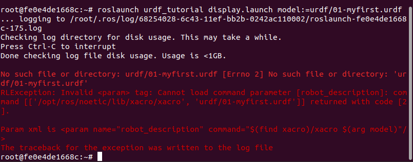
Создаю папку для проектов (рабочую область):
mkdir -p ~/catkin_ws/src
cd ~/catkin_ws/
catkin_make
source devel/setup.bash
echo "source ~/catkin_ws/devel/setup.bash" >> ~/.bashrc
source ~/.bashrc
Проверил:
echo $ROS_PACKAGE_PATH
Всё верно: /root/catkin_ws/src:/opt/ros/noetic/share
Повторил: roslaunch urdf_tutorial display.launch model:=urdf/01-myfirst.urdf
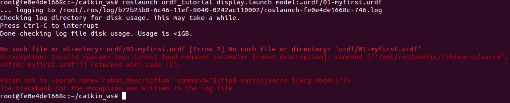
Посмотрел содержимое ~/catkin_ws/src. Есть только turtlebot3_simulations, когда в /opt/ros/noetic/share лежит дохрена каталогов, правда turtlebot3_simulations почему-то нет. Может перезагрузка нужна?
Сохранил изменения в контейнере в новый образ rosurdf
docker commit fe0e4de1668c rosurdf
Закрыл все терминалы и по-новому:
docker run --rm -it rosurdf /bin/bash
passwd
/etc/init.d/ssh start
Другой терминал: ssh -X root@172.17.0.2
root@f9a1a97b3272:~/catkin_ws/src# ls CMakeLists.txt turtlebot3_simulationsСодержимое не изменилось. И roslaunch urdf_tutorial display.launch model:=urdf/01-myfirst.urdf, сообщение на команду не изменилось.
Нашёл ошибку, оказывается roslaunch надо выполнять из каталога urdf_tutorials. Об этом даже чуть ниже у меня написано из перевода документации.
roscd urdf_tutorial root@f9a1a97b3272:/opt/ros/noetic/share/urdf_tutorial# roslaunch urdf_tutorial display.launch model:=urdf/01-myfirst.urdf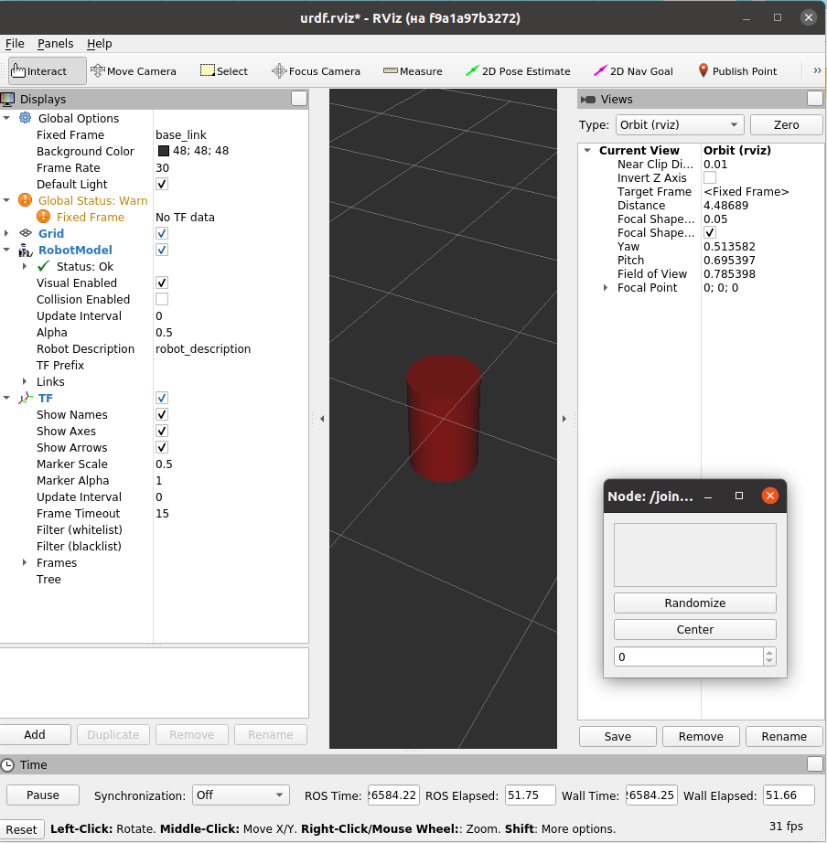
Команда делает три вещи.
- Загружает указанную модель на сервер параметров
- Запускает узлы для публикации sensor_msgs/JointState и преобразований (подробнее об этом позже)
- Запускает Rviz с файлом конфигурации
Слегка измененный аргумент позволяет этому работать независимо от текущего рабочего каталога:
roslaunch urdf_tutorial display.launch model:='$(find urdf_tutorial)/urdf/01-myfirst.urdf'
обратите внимание на одинарные кавычки, заключенные в значение аргумента.
Вам придется изменить все примеры строк roslaunch, приведенные в этих руководствах, если вы не запускаете их из расположения пакета urdf_tutorial.
Все равно непонятно, почему в src только один пакет turtlebot3_simulations, а где остальные?
Наверное в src находятся только пакеты пользователя.
На что следует обратить внимание:
fixed frame - это рамка преобразования, в которой расположен центр сетки. Здесь это рамка, определенная нашей единственной ссылкой, base_link.
По умолчанию начало визуального элемента (цилиндра) находится в центре его геометрии. Следовательно, половина цилиндра находится под сеткой.
Несколько фигур
Теперь давайте посмотрим, как добавить несколько snapes/links (фигур/ссылок). Если мы просто добавим больше link elements (элементов связи) в urdf, синтаксический анализатор не будет знать, куда их поместить. Поэтому нам придется добавить joints (соединения). Элементы соединения могут относиться как к гибким, так и к негибким соединениям. Мы начнем с негибких, или неподвижных, соединений.
09.09.2024:
docker run --rm -it rosurdf /bin/bash
passwd
/etc/init.d/ssh start
Другой терминал:
ssh -X root@172.17.0.2
roscd urdf_tutorial
cat urdf/02-multipleshapes.urdf
<?xml version="1.0"?>
<robot name="multipleshapes">
<link name="base_link">
<visual>
<geometry>
<cylinder length="0.6" radius="0.2"/>
</geometry>
</visual>
</link>
<link name="right_leg">
<visual>
<geometry>
<box size="0.6 0.1 0.2"/>
</geometry>
</visual>
</link>
<joint name="base_to_right_leg" type="fixed">
<parent link="base_link"/>
<child link="right_leg"/>
</joint>
</robot>
Обратите внимание, как мы определили прямоугольник размером 0,6 м х 0,1 м х 0,2 мСоединение (joint) определяется в терминах родительского (parent) и дочернего(child) элементов. В конечном счете, URDF представляет собой древовидную структуру с одной корневой ссылкой (root link). Это означает, что положение ножки (leg’s position) зависит от положения базовой ссылки (base_link’s position).
roslaunch urdf_tutorial display.launch model:=urdf/02-multipleshapes.urdf
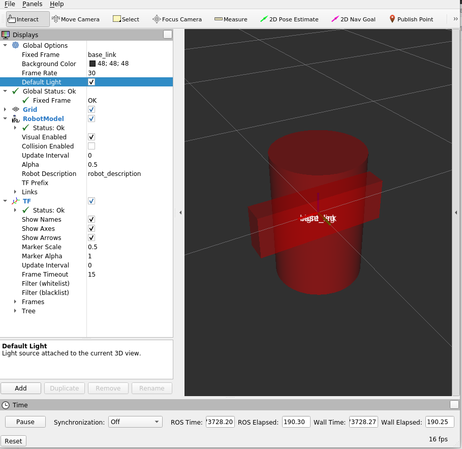
Обе фигуры пересекаются друг с другом, поскольку имеют одну и ту же исходную точку. Если мы хотим, чтобы они не пересекались, мы должны определить больше исходных точек.
origins:
Нога R2D2 прикреплена к верхней половине своего туловища сбоку. Итак, именно здесь мы указываем происхождение СОЕДИНЕНИЯ (joint). Кроме того, он крепится не к середине голени, а к верхней части, поэтому мы также должны сместить начало координат для голени. Мы также поворачиваем ногу, чтобы она стояла вертикально.
Второй терминал подключить удалённо к контейнеру не разрешают, потому закрыл rviz и:
cat urdf/03-origins.urdf
<?xml version="1.0"?>
<robot name="origins">
<link name="base_link">
<visual>
<geometry>>
<cylinder length="0.6" radius="0.2"/>
</geometry>
</visual>
</link>
<link name="right_leg">
<visual>
<geometry>
<box size="0.6 0.1 0.2"/>
</geometry>
<origin rpy="0 1.57075 0" xyz="0 0 -0.3"/>
</visual>
</link>
<joint name="base_to_right_leg" type="fixed">>
<parent link="base_link"/>
<child link="right_leg"/>
<origin xyz="0 -0.22 0.25"/>
</joint>
</robot>
Давайте начнем с изучения происхождения сустава (joint). Оно определяется в терминах родительской системы отсчета. Таким образом, мы находимся на расстоянии -0,22 метра в направлении y (слева от нас, но справа относительно осей) и 0,25 метра в направлении z (вверх). Это означает, что исходная точка дочерней ссылки будет находиться вверху и справа, независимо от визуального тега (тег visual) исходной точки дочерней ссылки. Поскольку мы не указали атрибут rpy (roll pitch yaw), дочерняя система координат (child frame) по умолчанию будет иметь ту же ориентацию, что и родительская система координат (parent frame).
Теперь, если посмотреть на визуальное начало отрезка, то оно имеет смещение как по оси xyz, так и по оси rpy. Это определяет, где должен находиться центр визуального элемента относительно его начала координат. Поскольку мы хотим, чтобы нога была прикреплена вверху, мы смещаем начало координат вниз, установив смещение z равным -0,3 метра. И поскольку мы хотим, чтобы длинная часть ноги была параллельна оси z, мы поворачиваем визуальную часть PI/2 вокруг оси Y.
roslaunch urdf_tutorial display.launch model:=urdf/03-origins.urdf
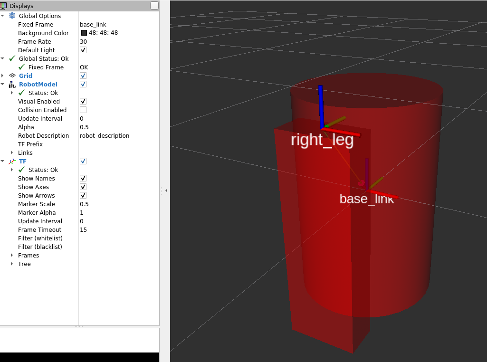
Файл запуска запускает пакеты, которые будут создавать TF-фреймы для каждой link в вашей модели на основе вашего URDF. Rviz использует эту информацию, чтобы определить, где отображать каждую фигуру.
Если TF-кадр не существует для данной link URDF, то он будет помещен в начало координат белым цветом
Material Girl:
Мой робот не красный. Давайте рассмотрим тег <material>Код urdf/04-materials.urdf:
<?xml version="1.0"?>
<robot name="materials">
<material name="blue">
<color rgba="0 0 0.8 1"/>
</material>
<material name="white">
<color rgba="1 1 1 1"/>
</material>
<link name="base_link">
<visual>
<geometry>
<cylinder length="0.6" radius="0.2"/>
</geometry>
<material name="blue"/>
</visual>
</link>
<link name="right_leg">>
<visual>
<geometry>
<box size="0.6 0.1 0.2"/>
</geometry>
<origin rpy="0 1.57075 0" xyz="0 0 -0.3"/>
<material name="white"/>
</visual>
</link>
<joint name="base_to_right_leg" type="fixed">
<parent link="base_link"/>
<child link="right_leg"/>
<origin xyz="0 -0.22 0.25"/>
</joint>
<link name="left_leg">
<visual>
<geometry>
<box size="0.6 0.1 0.2"/>
</geometry>
<origin rpy="0 1.57075 0" xyz="0 0 -0.3"/>
<material name="white"/>
</visual>
</link>
<joint name="base_to_left_leg" type="fixed">
<parent link="base_link"/>
<child link="left_leg"/>
<origin xyz="0 0.22 0.25"/>
</joint>
</robot>
Корпус теперь синий. Мы определили новый материал под названием “blue”, для которого красный, зеленый, синий и альфа-каналы определены как 0,0, 0,8 и 1 соответственно. Все значения могут находиться в диапазоне [0,1]. Затем на этот материал ссылается визуальный элемент base_link. Аналогично определяется белый материал
Можно также тег material определять внутри тега visual и даже ссылаться на него в других links.
Вы также можете использовать текстуру, чтобы указать файл изображения, который будет использоваться для раскрашивания объекта.
roslaunch urdf_tutorial display.launch model:=urdf/04-materials.urdf
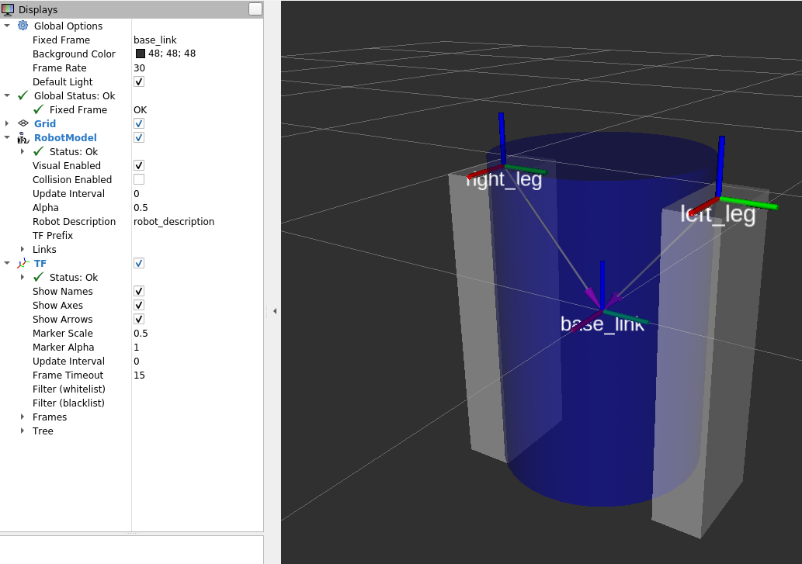
Конечная модель
Теперь мы дополним модель еще несколькими фигурами: ногами, колесами и головой. В частности, мы добавим сферу и несколько сеток (meshes). Мы также добавим несколько других деталей, которые будем использовать позже.Код urdf/05-visual.urdf:
<?xml version="1.0"?>
<robot name="visual">
<material name="blue">
<color rgba="0 0 0.8 1"/>
</material>
<material name="black">
<color rgba="0 0 0 1"/>
</material>
<material name="white">
<color rgba="1 1 1 1"/>
</material>
<link name="base_link">
<visual>
<geometry>
<cylinder length="0.6" radius="0.2"/>
</geometry>
<material name="blue"/>
</visual>
</link>
<link name="right_leg">
<visual>
<geometry>
<box size="0.6 0.1 0.2"/>
</geometry>
<origin rpy="0 1.57075 0" xyz="0 0 -0.3"/>
<material name="white"/>
</visual>
</link>
<joint name="base_to_right_leg" type="fixed">
<parent link="base_link"/>
<child link="right_leg"/>
<origin xyz="0 -0.22 0.25"/>
</joint>
<link name="right_base">
<visual>
<geometry>
<box size="0.4 0.1 0.1"/>
</geometry>
<material name="white"/>
</visual>
</link>
<joint name="right_base_joint" type="fixed">
<parent link="right_leg"/>
<child link="right_base"/>
<origin xyz="0 0 -0.6"/>
</joint>
<link name="right_front_wheel">
<visual>
<origin rpy="1.57075 0 0" xyz="0 0 0"/>
<geometry>
<cylinder length="0.1" radius="0.035"/>
</geometry>
<material name="black"/>
<origin rpy="0 0 0" xyz="0 0 0"/>
</visual>
</link>
<joint name="right_front_wheel_joint" type="fixed">
<parent link="right_base"/>
<child link="right_front_wheel"/>
<origin rpy="0 0 0" xyz="0.133333333333 0 -0.085"/>
</joint>
<link name="right_back_wheel">
<visual>
<origin rpy="1.57075 0 0" xyz="0 0 0"/>
<geometry>
<cylinder length="0.1" radius="0.035"/>
</geometry>
<material name="black"/>
</visual>
</link>
<joint name="right_back_wheel_joint" type="fixed">
<parent link="right_base"/>
<child link="right_back_wheel"/>
<origin rpy="0 0 0" xyz="-0.133333333333 0 -0.085"/>
</joint>
<link name="left_leg">
<visual>
<geometry>
<box size="0.6 0.1 0.2"/>
</geometry>
<origin rpy="0 1.57075 0" xyz="0 0 -0.3"/>
<material name="white"/>
</visual>
</link>
<joint name="base_to_left_leg" type="fixed">
<parent link="base_link"/>
<child link="left_leg"/>
<origin xyz="0 0.22 0.25"/>
</joint>
<link name="left_base">
<visual>
<geometry>
<box size="0.4 0.1 0.1"/>
</geometry>
<material name="white"/>
</visual>
</link>
<joint name="left_base_joint" type="fixed">
<parent link="left_leg"/>
<child link="left_base"/>
<origin xyz="0 0 -0.6"/>
</joint>
<link name="left_front_wheel">
<visual>
<origin rpy="1.57075 0 0" xyz="0 0 0"/>
<geometry>
<cylinder length="0.1" radius="0.035"/>
</geometry>
<material name="black"/>
</visual>
</link>
<joint name="left_front_wheel_joint" type="fixed">
<parent link="left_base"/>
<child link="left_front_wheel"/>
<origin rpy="0 0 0" xyz="0.133333333333 0 -0.085"/>
</joint>
<link name="left_back_wheel">
<visual>
<origin rpy="1.57075 0 0" xyz="0 0 0"/>
<geometry>
<cylinder length="0.1" radius="0.035"/>
</geometry>
<material name="black"/>
</visual>
</link>
<joint name="left_back_wheel_joint" type="fixed">
<parent link="left_base"/>
<child link="left_back_wheel"/>
<origin rpy="0 0 0" xyz="-0.133333333333 0 -0.085"/>
</joint>
<joint name="gripper_extension" type="fixed">
<parent link="base_link"/>
<child link="gripper_pole"/>
<origin rpy="0 0 0" xyz="0.19 0 0.2"/>
</joint>
<link name="gripper_pole">
<visual>
<geometry>
<cylinder length="0.2" radius="0.01"/>
</geometry>
<origin rpy="0 1.57075 0 " xyz="0.1 0 0"/>
</visual>
</link>
<joint name="left_gripper_joint" type="fixed">
<origin rpy="0 0 0" xyz="0.2 0.01 0"/>
<parent link="gripper_pole"/>
<child link="left_gripper"/>
</joint>
<link name="left_gripper">
<visual>
<origin rpy="0.0 0 0" xyz="0 0 0"/>
<geometry>
<mesh filename="package://urdf_tutorial/meshes/l_finger.dae"/>
</geometry>
</visual>
</link>
<joint name="left_tip_joint" type="fixed">
<parent link="left_gripper"/>
<child link="left_tip"/>
</joint>
<link name="left_tip">
<visual>
<origin rpy="0.0 0 0" xyz="0.09137 0.00495 0"/>
<geometry>
<mesh filename="package://urdf_tutorial/meshes/l_finger_tip.dae"/>
</geometry>
</visual>
</link>
<joint name="right_gripper_joint" type="fixed">
<origin rpy="0 0 0" xyz="0.2 -0.01 0"/>
<parent link="gripper_pole"/>
<child link="right_gripper"/>
</joint>
<link name="right_gripper">
<visual>
<origin rpy="-3.1415 0 0" xyz="0 0 0"/>
<geometry>
<mesh filename="package://urdf_tutorial/meshes/l_finger.dae"/>
</geometry>
</visual>
</link>
<joint name="right_tip_joint" type="fixed">
<parent link="right_gripper"/>
<child link="right_tip"/>
</joint>
<link name="right_tip">
<visual>
<origin rpy="-3.1415 0 0" xyz="0.09137 0.00495 0"/>
<geometry>
<mesh filename="package://urdf_tutorial/meshes/l_finger_tip.dae"/>
</geometry>
</visual>
</link>
<link name="head">
<visual>
<geometry>
<sphere radius="0.2"/>
</geometry>
<material name="white"/>
</visual>
</link>
<joint name="head_swivel" type="fixed">
<parent link="base_link"/>
<child link="head"/>
<origin xyz="0 0 0.3"/>
</joint>
<link name="box">
<visual>
<geometry>
<box size="0.08 0.08 0.08"/>
</geometry>
<material name="blue"/>
</visual>
</link>
<joint name="tobox" type="fixed">
<parent link="head"/>
<child link="box"/>
<origin xyz="0.1814 0 0.1414"/>
</joint>
</robot>
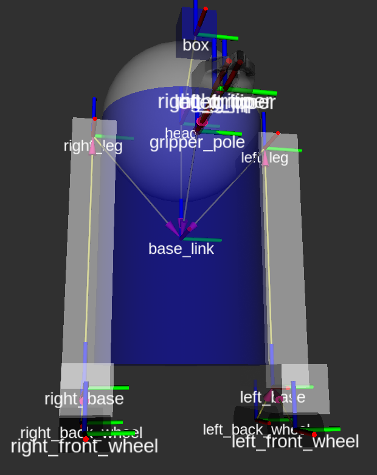
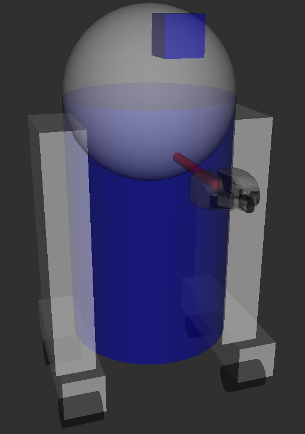
Приведенные здесь сетки (meshes) были позаимствованы из PR2. Это отдельные файлы, для которых вы должны указать путь. Вам следует использовать обозначение package://NAME_OF_PACKAGE/path. Сетки для этого учебного пособия находятся в пакете urdf_tutorial, в папке под названием meshes.
Сетки могут быть импортированы в различных форматах. Довольно часто используется STL, но движок также поддерживает DAE, который может содержать собственные цветовые данные, что означает, что вам не нужно указывать цвет/материал. Часто они хранятся в отдельных файлах. Эти сетки ссылаются на файлы .tif, также находящиеся в папке meshes.
Размер сеток также может быть определен с помощью относительных параметров масштабирования или ограничивающего прямоугольника.
Мы могли бы также сослаться на сетки в совершенно другом пакете, т.е. package://pr2_description/meshes/gripper_v0/l_finger.dae, который будет работать, если установлен пакет pr2_description.
Building a Movable Robot Model with URDF
В этом учебнике мы изменим модель R2D2, так чтобы он имел подвижные суставы (joints). Мы рассмотрим 3 других важных типа суставов: continuous, revolute и prismatic.urdf-файл с подвижными суставами находится в urdf/06-flexible.urdf
Чтобы визуализировать эту модель и управлять ею, запустите ту же команду, что и в предыдущем руководстве:
roslaunch urdf_tutorial display.launch model:=urdf/06-flexible.urdf
однако теперь также появится графический интерфейс, который позволит вам управлять значениями всех нефиксированных соединений. Поиграйте с моделью и посмотрите, как она движется. Затем мы сможем взглянуть на то, как мы этого добились.
- Head:
<joint name="head_swivel" type="continuous"> <parent link="base_link"/> <child link="head"/> <axis xyz="0 0 1"/> <origin xyz="0 0 0.3"/> </joint>Соединение между туловищем и головой является непрерывным, что означает, что оно может поворачиваться под любым углом от отрицательной до положительной бесконечности. Колеса также смоделированы таким образом, что они могут вращаться в обоих направлениях бесконечно.Единственная дополнительная информация, которую мы должны добавить, - это ось вращения, здесь она задается триплетом xyz, который определяет вектор, вокруг которого будет вращаться голова. Поскольку мы хотим, чтобы она вращалась вокруг оси z, мы задаем вектор "0 0 1".
- The Gripper
<joint name="left_gripper_joint" type="revolute"> <axis xyz="0 0 1"/> <limit effort="1000.0" lower="0.0" upper="0.548" velocity="0.5"/> <origin rpy="0 0 0" xyz="0.2 0.01 0"/> <parent link="gripper_pole"/> <child link="left_gripper"/> </joint>Как правое, так и левое захватные соединения (gripper joints) выполнены в виде поворотных соединений. Это означает, что они вращаются так же, как и неразъемные соединения, но имеют строгие ограничения. Следовательно, мы должны указать верхний и нижний пределы соединения (в радианах). Мы также должны указать максимальную скорость и усилие для этого соединения, но фактические значения не имеют значения для наших целей. - The Gripper Arm
<joint name="gripper_extension" type="prismatic"> <parent link="base_link"/> <child link="gripper_pole"/> <limit effort="1000.0" lower="-0.38" upper="0" velocity="0.5"/> <origin rpy="0 0 0" xyz="0.19 0 0.2"/> </joint>Захватный рычаг (gripper arm) - это другой тип шарнира, а именно призматический шарнир. Это означает, что он перемещается вдоль оси, а не вокруг нее. Именно это поступательное движение позволяет нашей модели робота выдвигать и втягивать свой захватный рычаг.Пределы призматического рычага задаются таким же образом, как и для поворотного шарнира, за исключением того, что единицами измерения являются метры, а не радианы.
- Other Types of Joints
Существуют два других вида соединений, которые перемещаются в пространстве. В то время как призматическое соединение может перемещаться только в одном измерении, плоское соединение может перемещаться в плоскости или в двух измерениях. Кроме того, плавающее соединение не имеет ограничений и может перемещаться в любом из трех измерений. Эти соединения не могут быть заданы только одним номером и поэтому не включены в данное руководство. - Specifying the Pose
Когда вы перемещаете ползунки в графическом интерфейсе, модель перемещается в Rviz. Как это делается? Сначала графический интерфейс анализирует URDF и находит все нефиксированные соединения и их границы. Затем он использует значения ползунков для публикации сообщений sensor_msgs/JointState. Затем они используются robot_state_publisher для вычисления всех преобразований между различными частями. Полученное дерево преобразований затем используется для отображения всех фигур в Rviz. - Теперь, когда у вас есть наглядно функциональная модель, вы можете добавить некоторые физические свойства или начать использовать xacro для упрощения вашего кода.
Adding Physical and Collision Properties to a URDF Model
Узнайте, как придать звеньям противоударные и инерционные свойства, а также как придать сочленениям динамику.- Collision
До сих пор мы задавали наши ссылки только с помощью одного подэлемента, visual, который определяет (что неудивительно), как выглядит робот. Однако, чтобы заставить работать функцию обнаружения столкновений или имитировать робота в чем-то вроде Gazebo, нам также нужно определить элемент столкновения.
Файл urdf/07-physics.urd с collision и физическими свойствами.<link name="base_link"> <visual> <geometry> <cylinder length="0.6" radius="0.2"/> </geometry> <material name="blue"> <color rgba="0 0 .8 1"/> </material> </visual> <collision> <geometry> <cylinder length="0.6" radius="0.2"/> </geometry> </collision> </link>Тег collision является прямым подэлементом объекта link, находящимся на том же уровне, что и тег visual.
Элемент collision определяет свою форму так же, как и визуальный элемент, с помощью тега geometry. Формат тега geometry здесь точно такой же, как и в визуальном элементе.
Вы также можете указать источник таким же образом, как и подэлемент тега коллизии (как в случае с визуальным элементом).Во многих случаях вам захочется, чтобы геометрия столкновения и начало координат в точности совпадали с визуальной геометрией и началом координат. Однако есть два основных случая, когда этого делать не следует.
- Quicker Processing (Более быстрая обработка) - обнаружение коллизий для двух сеток требует гораздо больших вычислительных затрат, чем для двух простых геометрий. Следовательно, вы можете захотеть заменить сетки более простыми геометриями в элементе collision.
- Safe Zones Безопасные зоны - возможно, вы захотите ограничить передвижение вблизи чувствительного оборудования. Например, если мы не хотим, чтобы что-либо столкнулось с головой R2D2, мы могли бы определить геометрию столкновения как цилиндр, охватывающий его голову, чтобы предотвратить попадание чего-либо слишком близко к его голове.
- Physical Properties
Чтобы ваша модель работала должным образом, вам необходимо определить несколько физических свойств вашего робота, то есть свойств, которые потребовались бы физическому движку, такому как GazeboИнерция
Для каждого моделируемого элемента связи требуется тег inertial. Вот простой тег:<link name="base_link"> <visual> <geometry> <cylinder length="0.6" radius="0.2"/> </geometry> <material name="blue"> <color rgba="0 0 .8 1"/> </material> </visual> <collision> <geometry> <cylinder length="0.6" radius="0.2"/> </geometry> </collision> <inertial> <mass value="10"/> <inertia ixx="0.4" ixy="0.0" ixz="0.0" iyy="0.4" iyz="0.0" izz="0.2"/> </inertial> </link>ision> </link>- Этот элемент также является подэлементом объекта link.
- Масса определяется в килограммах.
- Матрица инерции вращения 3х3 задается с помощью элемента инерции. Поскольку она симметрична, то может быть представлена только 6 элементами, как таковыми.
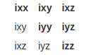 - Эта информация может быть предоставлена вам с помощью программ моделирования, таких как MeshLab. Инерция геометрических примитивов (цилиндр, прямоугольник, сфера) может быть вычислена с использованием списка тензоров момента инерции в Википедии (и используется в приведенном выше примере).
- Тензор инерции зависит как от массы, так и от распределения массы объекта. Хорошим первым приближением является предположение о равном распределении массы по объему объекта и вычисление тензора инерции на основе формы объекта, как описано выше.
- сли вы не уверены, что именно установить, то матрица с ixx/iyy/izz=1e-3 или меньше часто является разумным выбором по умолчанию для линков среднего размера (это соответствует коробке с длиной стороны 0,1 м и массой 0,6 кг). Идентификационная матрица - особенно неудачный выбор, поскольку она часто бывает слишком высокой (она соответствует коробке с длиной стороны 0,1 м и массой 600 кг!).
- Вы также можете указать исходный тег, чтобы указать центр тяжести и инерциальную систему отсчета (относительно системы отсчета ссылки).
- При использовании контроллеров реального времени нулевые (или почти нулевые) инерционные элементы могут привести к тому, что модель робота рухнет без предупреждения, и все ссылки будут отображаться так, чтобы их происхождение совпадало с мировым происхождением.
Contact Coefficients
Вы также можете определить, как ведут себя ссылки, когда они соприкасаются друг с другом. Для этого используется подэлемент тега collision, называемый contact_coefficients. Необходимо указать три атрибута:- mu - Friction coefficient
- kp - Stiffness coefficient
- kd - Dampening coefficient
Joint Dynamics
То, как движется сустав, определяется тегом dynamics для этого сустава. Здесь есть два атрибута:- friction - физическое статическое трение. Для призматических соединений единицами измерения являются ньютоны. Для вращающихся соединений единицами измерения являются ньютон-метры.
- damping - величина физического демпфирования. Для призматических соединений единицами измерения являются Ньютон-секунды на метр. Для вращающихся шарниров - ньютон-метровые секунды на радиан.
- Другие теги
В области чистого URDF (т.е. без учета тегов, относящихся к Gazebo), остаются два тега, которые помогают определить соединения: тег calibration и тег safety controller. Ознакомьтесь со спецификацией, поскольку они не включены в это руководство.
Using Xacro to Clean Up a URDF File
Узнайте несколько приемов, позволяющих уменьшить объем кода в URDF-файле с помощью Xacro.К настоящему времени, если вы выполняете все эти действия дома, создавая собственного робота, вам, возможно, надоест заниматься всевозможными математическими расчетами, чтобы получить очень простые описания роботов для правильного анализа. К счастью, вы можете использовать пакет xacro, чтобы упростить себе жизнь. Он делает три вещи, которые очень полезны:
- Constants
- Simple Math
- Macros
1. Using Xacro
Как следует из названия, xacro - это макроязык для XML. Программа xacro запускает все макросы и выдает результат. Типичное использование выглядит примерно так:
xacro --inorder model.xacro > model.urdf
В дистрибутивах ROS melodic и более поздних версиях вам следует опустить аргумент {--inorder}.
Вы также можете автоматически сгенерировать urdf в файле запуска. Это удобно, поскольку он постоянно обновляется и не занимает место на жестком диске. Однако для создания этого файла требуется время, поэтому имейте в виду, что запуск файла запуска может занять больше времени. (Я смотрю на твое описание pr2_description):
<param name="robot_description" command="xacro --inorder '$(find pr2_description)/robots/pr2.urdf.xacro'" />В верхней части файла URDF необходимо указать пространство имен (namespace), чтобы файл был правильно обработан. Например, это первые две строки правильного файла xacro:
<?xml version="1.0"?> <robot xmlns:xacro="http://www.ros.org/wiki/xacro" name="firefighter">2. Constants
Давайте бегло взглянем на наш base_link в R2D2:
<link name="base_link">
<visual>
<geometry>
<cylinder length="0.6" radius="0.2"/>
</geometry>
<material name="blue"/>
</visual>
<collision>
<geometry>
<cylinder length="0.6" radius="0.2"/>
</geometry>
</collision>
</link>
Приведенная здесь информация немного избыточна. Мы указываем длину и радиус цилиндра дважды. Что еще хуже, если мы хотим изменить это, нам нужно сделать это в двух разных местах.
К счастью, xacro позволяет вам указывать свойства, которые действуют как константы. Вместо приведенного выше кода мы можем написать этот:
<xacro:property name="width" value="0.2" />
<xacro:property name="bodylen" value="0.6" />
<link name="base_link">
<visual>
<geometry>
<cylinder radius="${width}" length="${bodylen}"/>
</geometry>
<material name="blue"/>
</visual>
<collision>
<geometry>
<cylinder radius="${width}" length="${bodylen}"/>
</geometry>
</collision>
</link>
- Эти два значения указаны в первых двух строках. Они могут быть определены практически в любом месте (при условии корректного XML), на любом уровне, до или после их использования. Обычно они располагаются вверху.
- Вместо определения радиуса в теге geometry, мы используем знак доллара и скобки {}, чтобы вставить значение радиуса.
- Этот код сгенерирует тот же код, что и показанный выше.
<xacro:property name=”robotname” value=”marvin” />
<link name=”${robotname}s_leg” />
Будет сгенерирован:
<link name=”marvins_leg” />However, the contents in the ${} don’t have to only be a property, which brings us to our next point...
3. Математика
Вы можете создавать сколь угодно сложные выражения в конструкции ${}, используя четыре основные операции (+,-,*,/), унарный минус и круглые скобки. Примеры:
<cylinder radius="${wheeldiam/2}" length="0.1"/>
<origin xyz="${reflect*(width+.02)} 0 0.25" />
Все в математике использует числа с плавающей точкой, следовательно:
<link name="${5/6}"/>
вычисляется как:
<link name="0.833333333333"/>
В Jade и более поздних дистрибутивах вы можете использовать не только перечисленные выше базовые операции, в частности sin и cos.
4. Macros
Здесь самый большой и полезный компонент пакета xacro.
- Simple Macro
Давайте рассмотрим простое использование macro.<xacro:macro name="default_origin"> <origin xyz="0 0 0" rpy="0 0 0"/> </xacro:macro> <xacro:default_origin />(This is useless, since if the origin is not specified, it has the same value as this.) Будет сгенерирован следующий код:<origin rpy="0 0 0" xyz="0 0 0"/>
- Технически name не является обязательным элементом, но вам необходимо указать его, чтобы иметь возможность его использовать.
- Каждая вставка <xacro:$NAME /> заменяется содержимым тега xacro:macro
- Обратите внимание, что даже при том, что это не совсем одно и то же (два атрибута поменялись местами), сгенерированный XML эквивалентен
- Если xacro с указанным именем не найден, он не будет развернут и не выдаст ошибку.
- Parameterized Macro
Вы также можете настроить параметры макросов, чтобы они не генерировали каждый раз один и тот же текст. В сочетании с математическими функциями это еще более эффективно.Для начала давайте рассмотрим пример простого макроса, используемого в R2D2.
<xacro:macro name="default_inertial" params="mass"> <inertial> <mass value="${mass}" /> <inertia ixx="1.0" ixy="0.0" ixz="0.0" iyy="1.0" iyz="0.0" izz="1.0" /> </inertial> </xacro:macro>Это может быть использовано с кодом:
<xacro:default_inertial mass="10"/>
Параметры действуют точно так же, как свойства, и вы можете использовать их в выраженияхВы также можете использовать целые блоки в качестве параметров:
<xacro:macro name="blue_shape" params="name *shape"> <link name="${name}"> <visual> <geometry> <xacro:insert_block name="shape" /> </geometry> <material name="blue"/> </visual> <collision> <geometry> <xacro:insert_block name="shape" /> </geometry> </collision> </link> </xacro:macro> <xacro:blue_shape name="base_link"> <cylinder radius=".42" length=".01" /> </xacro:blue_shape>- Чтобы указать параметр блока, поставьте звездочку перед его именем.
- Блок может быть вставлен с помощью команды insert_block
- Вставляйте блок столько раз, сколько пожелаете
5. Practical Usage
Язык xacro достаточно гибок в том, что он позволяет вам делать. Вот несколько полезных способов использования xacro в модели R2D2, в дополнение к инерционному макросу по умолчанию, показанному выше.
Чтобы увидеть модель, сгенерированную с помощью файла xacro, запустите ту же команду, что и в предыдущих руководствах:
roslaunch urdf_tutorial display.launch model:=urdf/08-macroed.urdf.xacro
(Все это время в файле запуска выполнялась команда xacro, но поскольку макросов для расширения не было, это не имело значения)
- Leg macro
Часто требуется создать несколько похожих объектов в разных местах. Часто требуется обеспечить некоторую симметрию в расположении. Вы можете использовать макрос и простую математику, чтобы сократить объем кода, который вам нужно написать, как мы делаем с двумя ногами R2.<xacro:macro name="leg" params="prefix reflect"> <link name="${prefix}_leg"> <visual> <geometry> <box size="${leglen} 0.1 0.2"/> </geometry> <origin xyz="0 0 -${leglen/2}" rpy="0 ${pi/2} 0"/> <material name="white"/> </visual> <collision> <geometry> <box size="${leglen} 0.1 0.2"/> </geometry> <origin xyz="0 0 -${leglen/2}" rpy="0 ${pi/2} 0"/> </collision> <xacro:default_inertial mass="10"/> </link> <joint name="base_to_${prefix}_leg" type="fixed"> <parent link="base_link"/> <child link="${prefix}_leg"/> <origin xyz="0 ${reflect*(width+.02)} 0.25" /> </joint> <!-- A bunch of stuff cut --> </xacro:macro> <xacro:leg prefix="right" reflect="1" /> <xacro:leg prefix="left" reflect="-1" />- Обычный трюк 1: Используйте имя prefix, чтобы получить два объекта с одинаковыми именами.
- Обычная хитрость 2: Используйте математику для расчета начала соединения. В случае, если вы меняете размер вашего робота, изменение свойства с помощью математических методов для расчета смещения соединения избавит вас от многих проблем.
- Обычный трюк № 3: Используйте параметр reflect и установите для него значение 1 или -1. Посмотрите, как мы используем параметр reflect, чтобы расположить ноги по обе стороны от тела в исходной точке base_to_${префикс}_leg.
- Другие уловки
Не стесняйтесь добавлять сюда свои собственные трюки.
URDF в Gazebo
Предварительное руководство о том, как создавать своего робота и управлять им в Gazebo.Пожалуйста, скачайте руководство по моделированию URDF с github или с помощью aptitude, например, для ROS kinetic:
sudo apt-get install ros-kinetic-urdf-sim-tutorial
Я (10.09.2024):
Стандартные команды для выполнения графических программ на локальном компьютере с удаленного контейнера:
docker run --rm -it rosurdf /bin/bash
passwd
/etc/init.d/ssh start
Другой терминал:
ssh -X root@172.17.0.2
Теперь скачиваю учебник:
sudo apt-get install ros-noetic-urdf-sim-tutorial
Уже был установлен этот учебник.
Где именно установлен этот urdf-sim-tutorial, не нашёл. Ладно, не важно.
Нашёл, пакет называется urdf_sim_tutorial и находится он в /opt/ros/noetic/share/
- Nonfunctional Gazebo Interface
Мы можем создать модель, которую мы уже создали, в Gazebo, используя gazebo.launch:
roslaunch urdf_sim_tutorial gazebo.launchЯ:
cd root/catkin_ws catkin_makeПроверил, в папке src ничего не изменилось, только пакет turtlebot3_simulations. После:
roslaunch urdf_sim_tutorial gazebo.launch
Сообщения:
[ WARN] [1725956442.259207689]: The root link base_link has an inertia specified in the URDF, but KDL does not support a root link with an inertia. As a workaround, you can add an extra dummy link to your URDF.
Видимо из-за того, что gazebo не поддерживает urdf, потому некоторые моменты типа инерции не будет выполнять.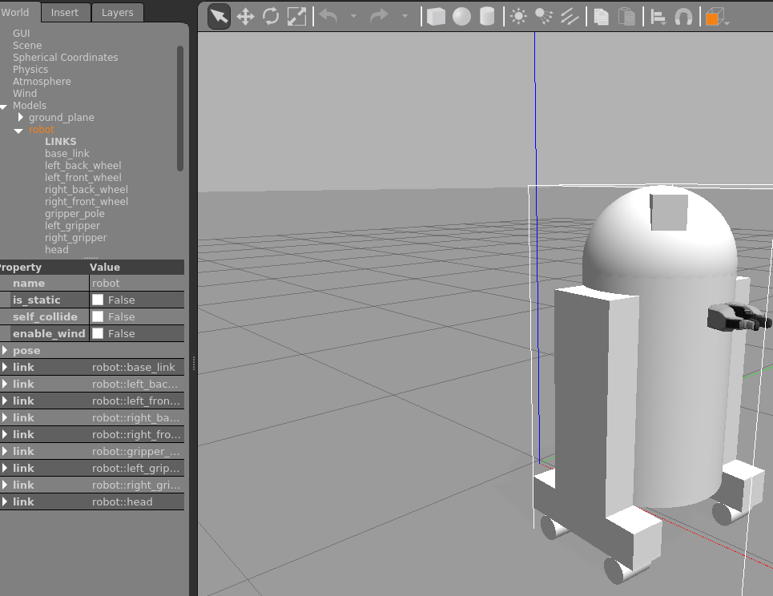
Этот файл запуска:
- Загружает urdf из руководства по макросам в описание параметра (parameter description).
- Запускает пустой gazebo мир world
- Запускает скрипт для считывания urdf из параметра и создания его в gazebo.
Чтобы сделать робота интерактивным (с вами и ROS), нам нужно указать две вещи: плагины и передачи )Plugins and Transmissions).
- Gazebo Plugin
Чтобы заставить ROS взаимодействовать с Gazebo, мы должны динамически подключиться к библиотеке ROS, которая будет указывать Gazebo, что делать. Теоретически это позволяет другим операционным системам роботов взаимодействовать с Gazebo обычным способом. На практике это просто ROS.Чтобы связать Gazebo и ROS, мы указываем плагин в URDF, прямо перед закрывающим тегом </robot>:
<gazebo> <plugin name="gazebo_ros_control" filename="libgazebo_ros_control.so"> <robotNamespace>/</robotNamespace> </plugin> </gazebo>Вы можете увидеть это в https://github.com/ros/urdf_sim_tutorial/blob/master/urdf/09-publishjoints.urdf.xacro и, запустив:
roslaunch urdf_sim_tutorial gazebo.launch model:=urdf/09-publishjoints.urdf.xacroОднако это пока не принесет ничего нового. Для этого нам нужно указать больше информации за пределами URDF
- Spawning Controllers
Теперь, когда мы связали ROS и Gazebo, нам нужно указать некоторые фрагменты кода ROS, которые мы хотим запустить в Gazebo, которые мы обычно называем контроллерами. Изначально они загружаются в пространство параметров ROS. У нас есть yaml-файл joints.yaml, который определяет наш первый контроллер.type: "joint_state_controller/JointStateController" publish_rate: 50
Этот контроллер находится в пакете joint_state_controller и публикует состояние суставов робота в ROS непосредственно из Gazebo.В 09-joints.launch вы можете увидеть, как мы должны загрузить этот yaml-файл в namespace r2d2_joint_state_controller. Затем мы вызываем скрипт [[controller_manager]]/spawner с namespace, который загружает его в Gazebo.
Вы можете запустить его, но он все еще не совсем готов: roslaunch urdf_sim_tutorial 09-joints.launch
Это запустит контроллер и фактически опубликует его в разделе /joint_states .... но в нём ничего не будет.header: seq: 652 stamp: secs: 13 nsecs: 331000000 frame_id: '' name: [] position: [] velocity: [] effort: []Что еще вам нужно для gazebo? Ну, он хочет знать, о каких joints публиковать информацию. - Transmissions
Для каждого нефиксированного соединения нам нужно указать передачу (transmission), которая сообщает Gazebo, что делать с соединением. Давайте начнем с головного соединения. Добавьте в свой URDF следующее:<transmission name="head_swivel_trans"> <type>transmission_interface/SimpleTransmission</type> <actuator name="$head_swivel_motor"> <mechanicalReduction>1</mechanicalReduction> </actuator> <joint name="head_swivel"> <hardwareInterface>hardware_interface/PositionJointInterface</hardwareInterface> </joint> </transmission>Для ознакомления просто рассмотрите большую часть этого фрагмента кода как стандартный.
Первое, на что следует обратить внимание, - это элемент joint. Имя должно соответствовать объявленному ранее joint.
Аппаратный интерфейс будет важен при изучении плагинов.Вы можете запустить этот URDF с нашей предыдущей конфигурацией запуска:
roslaunch urdf_sim_tutorial 09-joints.launch model:=urdf/10-firsttransmission.urdf.xacroОткрылись rviz и gazebo с нашим роботом.
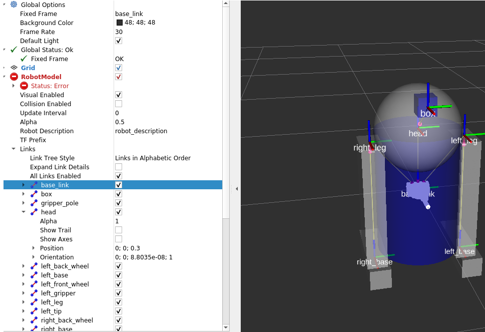
и
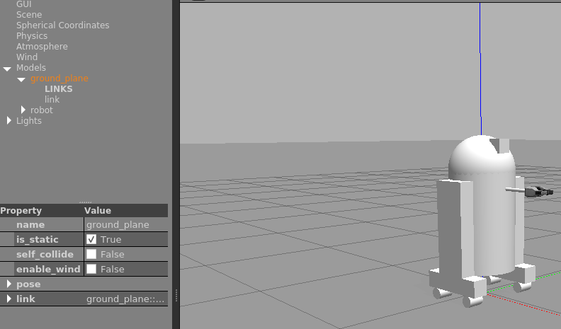
Теперь head отображается правильно в RViz, потому что head joint указан в сообщениях join_states.
header: seq: 220 stamp: secs: 4 nsecs: 707000000 frame_id: '' name: ['head_swivel'] position: [-2.9051283156888985e-08] velocity: [7.575990694887896e-06] effort: [0.0]Мы могли бы продолжить добавлять передачи для всех нефиксированных соединений (и мы это сделаем), чтобы все соединения были должным образом опубликованы. Но в жизни есть нечто большее, чем просто просмотр роботов. Мы хотим управлять ими. Итак, давайте установим еще один контроллер. - Joint Control (управление суставами)
Добавим контроллер:type: "position_controllers/JointPositionController" joint: head_swivel
Это указывает на необходимость использования JointPositionController из пакета position_controllers для управления передачей head_swivel. Обратите внимание, что аппаратный интерфейс в URDF для этого соединения соответствует типу контроллера.Теперь мы можем запустить это с добавленной конфигурацией, как и раньше:
roslaunch urdf_sim_tutorial 10-head.launchТеперь нода Gazebo подписана на новый топик и мы можем контролировать позицию головы (head) публикацией значений в ros топик:
rostopic pub /r2d2_head_controller/command std_msgs/Float64 "data: -0.707"Когда эта команда будет опубликована, положение немедленно изменится на указанное значение. Это связано с тем, что мы не указали никаких ограничений для соединения в нашем urdf. Однако, если мы изменим соединение, оно будет перемещаться постепенно.
<joint name="head_swivel" type="continuous"> <parent link="base_link"/> <child link="head"/> <axis xyz="0 0 1"/> <origin xyz="0 0 ${bodylen/2}"/> <limit effort="30" velocity="1.0"/> </joint>Я: запустил новый терминал контейнера командой: docker exec -it 9826cde6760f bash
Непонятно только, где я этот терминал запустил: в контейнере удаленного компьютера или локально в симуляторе этого компьютера. Выполнил команду: rostopic pub /r2d2_head_controller/command std_msgs/Float64 "data: -0.707"
В графических симуляторах ничего не шевельнулось и не поменялось и непонятно, что должно было произойти.Закрыл всю графику и выполнил: roslaunch urdf_sim_tutorial 10-head.launch model:=urdf/11-limittransmission.urdf.xacro
Открылись симуляторы. В другом терминале снова: rostopic pub /r2d2_head_controller/command std_msgs/Float64 "data: -0.707"
Снова ничего не поменялось, непонятно. - Another Controller
Аналогичным образом мы можем изменить URDF для соединений захвата (Gripper joints). Однако вместо того, чтобы индивидуально управлять каждым соединением захвата с помощью отдельной темы ROS, мы могли бы сгруппировать их вместе. Для этого нам просто нужно указать другой контроллер в параметрах ROS (ROS parameters), код файла urdf_sim_tutorial/config/gripper.yaml:type: "position_controllers/JointGroupPositionController" joints: - gripper_extension - left_gripper_joint - right_gripper_joint
Чтобы запустить робот:
roslaunch urdf_sim_tutorial 12-gripper.launchТаким образом, мы можем вместо этого указать позицию руки с захватом (gripper) с помощью массива значений с плавающей запятой. Вывести руку с захватом и открыть клешни, публикуем сообщение:
rostopic pub /r2d2_gripper_controller/command std_msgs/Float64MultiArray "layout: dim: - label: '' size: 3 stride: 1 data_offset: 0 data: [0, 0.5, 0.5]"Чтобы скрыть руку с клешнями, сообщение:rostopic pub /r2d2_gripper_controller/command std_msgs/Float64MultiArray "layout: dim: - label: '' size: 3 stride: 1 data_offset: 0 data: [-0.4, 0, 0]"На этот раз у меня всё работает. - The Wheels on the Droid Go Round and Round
Чтобы управлять роботом, мы задаем еще одну передачу для каждого из колес в макросе wheel (колесо).<transmission name="${prefix}_${suffix}_wheel_trans"> <type>transmission_interface/SimpleTransmission</type> <actuator name="${prefix}_${suffix}_wheel_motor"> <mechanicalReduction>1</mechanicalReduction> </actuator> <joint name="${prefix}_${suffix}_wheel_joint"> <hardwareInterface>hardware_interface/VelocityJointInterface</hardwareInterface> </joint> </transmission>Это точно так же, как и другие передачи, за исключением:- Он использует macro параметры к специфичным именам.
- он использует VelocityJointInterface.
<gazebo reference="${prefix}_${suffix}_wheel"> <mu1 value="200.0"/> <mu2 value="100.0"/> <kp value="10000000.0" /> <kd value="1.0" /> <material>Gazebo/Grey</material> </gazebo>Посмотрите http://gazebosim.org/tutorials/?tut=ros_urdf для большей информации.Мы могли бы указать контроллеры для каждого отдельного колеса, но что в этом интересного? Вместо этого мы хотим управлять всеми колесами вместе. Для этого нам понадобится гораздо больше параметров ROS.
type: "diff_drive_controller/DiffDriveController" publish_rate: 50 left_wheel: ['left_front_wheel_joint', 'left_back_wheel_joint'] right_wheel: ['right_front_wheel_joint', 'right_back_wheel_joint'] wheel_separation: 0.44 # Odometry covariances for the encoder output of the robot. These values should # be tuned to your robot's sample odometry data, but these values are a good place # to start pose_covariance_diagonal: [0.001, 0.001, 0.001, 0.001, 0.001, 0.03] twist_covariance_diagonal: [0.001, 0.001, 0.001, 0.001, 0.001, 0.03] # Top level frame (link) of the robot description base_frame_id: base_link # Velocity and acceleration limits for the robot linear: x: has_velocity_limits : true max_velocity : 0.2 # m/s has_acceleration_limits: true max_acceleration : 0.6 # m/s^2 angular: z: has_velocity_limits : true max_velocity : 2.0 # rad/s has_acceleration_limits: true max_acceleration : 6.0 # rad/s^2DiffDriveController подписывается на стандартное сообщение Twist cmd_vel и соответствующим образом перемещает робота.
roslaunch urdf_sim_tutorial 13-diffdrive.launchВ дополнение к загрузке симуляторов также открывается панель управления роботом, позволяющую вам управлять роботом R2D2, одновременно наблюдая за его реальным поведением (в Gazebo) и визуализируемым поведением (в RViz).
Всё работает
Tutorial: Using a URDF in Gazebo
Чтобы использовать URDF-файл в Gazebo, необходимо добавить некоторые дополнительные теги, специфичные для моделирования, для правильной работы с Gazebo. В этом руководстве описаны необходимые шаги для успешного использования вашего робота на основе URDF в Gazebo, что избавит вас от необходимости создавать отдельный SDF-файл с нуля и дублировать форматы описания. После этого Gazebo автоматически преобразует URDF в SDF.Хотя URDF являются полезным и стандартизированным форматом в ROS, им не хватает многих функций, и они не были обновлены в соответствии с растущими потребностями робототехники. URDF может определять кинематические и динамические свойства только одного робота в отдельности. URDF не может указать положение самого робота в мире. Это также не универсальный формат описания, поскольку он не может указывать петли соединения (параллельные соединения) (joint loops (parallel linkages), а также ему не хватает трения и других свойств. Кроме того, он не может указывать объекты, которые не являются роботами, такие как освещение, карты высот и т.д.
Что касается реализации, то синтаксис URDF нарушает правильное форматирование из-за интенсивного использования атрибутов XML, что, в свою очередь, делает URDF более негибким. Также отсутствует механизм обратной совместимости.
Чтобы решить эту проблему, для использования в Gazebo был создан новый формат, называемый форматом описания моделирования (SDF), который устраняет недостатки URDF. SDF - это полное описание всего, начиная с уровня мира и заканчивая уровнем робота. Он масштабируем и позволяет легко добавлять и изменять элементы. Формат SDF сам по себе описывается с помощью XML, что облегчает простой инструмент обновления для переноса старых версий на новые. Он также не требует описания.
Есть несколько шагов, чтобы заставить робота URDF правильно работать в Gazebo. Ниже приведен обзор шагов, которые затем будут подробно рассмотрены в остальной части этого руководства:
- Тег <inertia> внутри каждого тега <link> является обязательным и должен быть правильно указан и сконфигурирован.
- Опциональные теги:
- Тег <gazebo> внутри каждого <link>
- Преобразование визуальных цветов в формат gazebo
- Конвертирует файлы stl в файлы dae для получения лучших текстур
- Добавляет сенсорные плагины
- Тег <gazebo> внутри каждого <joint>
- Устанавливает правильную динамику демпфирования (столкновения с препятствиями-?)
- Добавляет плагины управления актуаторами (actuator control plugins)
- Тег <gazebo> внутри <robot>
- Добавьте <link name="world"/>, если робот должен быть жестко привязан к world/base_link
- Тег <gazebo> внутри каждого <link>
Тег <gazebo>
Тег <gazebo> является дополнительным тегом к URDF, используемым для задания дополнительных свойств, необходимых для моделирования в Gazebo. Он позволяет указать свойства, найденные в формате SDF, которые не включены в формат URDF. Ни один из элементов в элементе <gazebo> не является обязательным, поскольку значения по умолчанию будут включены автоматически. Существует три различных типа элементов <gazebo> - один для тега <robot>, один для тегов <link> и один для тегов <joint>. В этом руководстве мы обсудим атрибуты и элементы каждого типа тега <gazebo>.Первым шагом к тому, чтобы ваш робот начал работать в Gazebo, является получение рабочего файла URDF из соответствующих руководств ROS по URDF. Протестируйте свой URDF, просмотрев его в Rviz, прежде чем приступать к настройке вашего робота в Gazebo. В этом уроке мы будем использовать простого демонстрационного робота по имени RRBot. Не стесняйтесь использовать этого робота или вашего собственного бота.
RRBot, или "Revolute-Revolute Manipulator Robot" (Вращающийся робот-манипулятор), представляет собой простую 3-рычажную 2-шарнирную руку, которую мы будем использовать для демонстрации различных функций Gazebo и URDFs. По сути, это двойной перевернутый маятник, который демонстрирует некоторые забавные концепции управления в симуляторе.
Чтобы получить RRBot, клонируйте gazebo_ros_demos с гитхаба в рабочая область (catkin_ws)/src и пересоберите ваше рабочее пространство:
cd ~/catkin_ws/src/ git clone https://github.com/ros-simulation/gazebo_ros_demos.git cd .. catkin_makeЧтобы проверить, все ли работает, запустите RRBot в Rviz:
roslaunch rrbot_description rrbot_rviz.launchДолжны увидеть похожее на это:

Если у вас ничего не получится, попробуйте отключить все старые процессы roscore с помощью killall roscore и перезапустить RViz.
Вы также должны иметь возможность манипулировать ползунками в окне Joint State Publisher, чтобы перемещать два соединения.
В руководстве gazebo_ros_control объясняется, как использовать Rviz для мониторинга состояния вашего моделируемого робота, публикуя /joint_states непосредственно из Gazebo. В предыдущем примере RRBot в Rviz получает свои /joint_states из фейковой ноды joint_states_publisher (окно с ползунками).
Изучение URDF RRBot:
Оставшаяся часть этого руководства будет посвящена различным аспектам RRBot URDF. Продолжайте и просмотрите файл rrbot.xacro прямо сейчас:rosed rrbot_description rrbot.xacroМы используем Xacro, чтобы упростить некоторые вычисления link и joint. Мы также включаем два дополнительных файла:
- rrbot.gazebo - файл, относящийся к Gazebo, который содержит большинство наших XML-элементов, относящихся к Gazebo, включая теги
- materials.xacro - это простой файл цветов Rviz для хранения значений rgba, который на самом деле не нужен, но является хорошим решением
Просмотр в Gazebo:
Вы также должны иметь возможность запустить RRBot в Gazebo:roslaunch rrbot_gazebo rrbot_world.launchВ запущенном окне Gazebo вы должны увидеть робота, стоящего вертикально. Несмотря на то, что по умолчанию в физическом симуляторе нет преднамеренных помех, числовые ошибки должны начать накапливаться и привести к падению двойного перевернутого маятника через несколько секунд.
В конечном итоге arm должен полностью остановиться. Мы рекомендуем вам настроить и протестировать различные аспекты URDF в следующих уроках, которые помогут вам узнать больше о моделировании роботов URDF.
Заголовок urdf-файла
В Gazebo и требуемом формате URDF было внесено много изменений в API, одним из которых стало то, что схема namespaces Gazebo больше не нужна. Если в вашем URDF есть что-то вроде:
<robot xmlns:sensor="http://playerstage.sourceforge.net/gazebo/xmlschema/#sensor"
xmlns:controller="http://playerstage.sourceforge.net/gazebo/xmlschema/#controller"
xmlns:interface="http://playerstage.sourceforge.net/gazebo/xmlschema/#interface"
xmlns:xacro="http://playerstage.sourceforge.net/gazebo/xmlschema/#xacro"
name="pr2" >
Вы можете удалить их. Все, что вам нужно в теге корневого элемента, - это имя робота и, при необходимости, xml-пространство имен для xacro, если вы его используете:
<robot name="rrbot" xmlns:xacro="http://www.ros.org/wiki/xacro">
Тег <gazebo>
Если тег <gazebo> используется без свойства reference="", то предполагается, что элемент <gazebo> используется для всей модели робота. В следующей таблице перечислены элементы для <gazebo>:
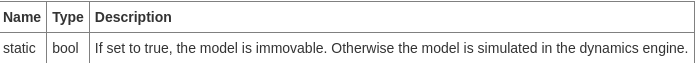
Если установлено значение true, модель остается неподвижной. В противном случае модель моделируется в движке dynamics engine.
Элементы в теге <gazebo>, которых нет в приведенной выше таблице, непосредственно вставляются в тег SDF <model> для сгенерированного SDF. Это особенно полезно для плагинов, как описано в руководстве по подключению двигателей и датчиков ROS.
Фиксируем модель к World
Если вы хотите, чтобы ваша URDF-модель была постоянно прикреплена к мировому каркасу (world frame)(плоскости земли), вы должны создать link "world" и joint, которое закрепит ее на основании вашей модели. RRBot выполняет это следующим образом:
<!-- Used for fixing robot to Gazebo 'base_link' -->
<link name="world"/>
<joint name="fixed" type="fixed">
<parent link="world"/>
<child link="link1"/>
</joint>
Однако, если у вас есть мобильная база или какой-то движущийся робот, вам это не нужно.
<collision> and <visual> теги
Эти теги работают в Gazebo практически так же, как и в Rviz. Важно, чтобы вы указали оба тега, поскольку, в отличие от некоторых приложений ROS, Gazebo не будет использовать ваши <visual> элементы в качестве <collision>, если вы явно не укажете тег <collision>. Вместо этого Gazebo будет считать вашу ссылку "invisible" (невидимой) для лазерных сканеров и проверки коллизий.Understanding the PR2 Robot Description
В этом руководстве объясняется схема файла URDF Xacro верхнего уровня для сложного робота, такого как PR2.
В этом руководстве по-прежнему используется описание в pr2_defs, которое теперь заменено описанием в pr2_description. Несмотря на схожесть, между этим URDF и текущим URDF, используемым в PR2, произошли изменения. В частности, XML-схемы, указанные в элементе <robot>, больше не требуются Gazebo, и все ссылки на плагины Gazebo неверны, поскольку их API значительно изменился.
Полный макрофайл PR2 URDF можно найти в пакете pr2_description в файле robots/pr2.urdf.xacro.
Давайте разберем этот длинный файл по частям:
<robot xmlns:sensor="http://playerstage.sourceforge.net/gazebo/xmlschema/#sensor"
xmlns:controller="http://playerstage.sourceforge.net/gazebo/xmlschema/#controller"
xmlns:interface="http://playerstage.sourceforge.net/gazebo/xmlschema/#interface"
xmlns:xacro="http://playerstage.sourceforge.net/gazebo/xmlschema/#interface"
name="pr2" >
Корневым элементом для XML должен быть тег robot с атрибутом name. Здесь объявлены пространства имен (namespaces) XML.Далее ничего не понял.
Пример создания собственного файла urdf
- Создаём древовидную структу
В этом руководстве мы создадим URDF-описание "робота", показанного на рисунке ниже.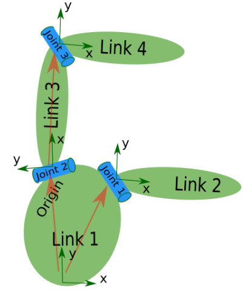
Робот на изображении представляет собой древовидную структуру. Давайте начнем с самого простого и создадим описание этой древовидной структуры, не заботясь о размерах и т.д. Запустите свой любимый текстовый редактор и создайте файл с именем my_robot.urdf:
<robot name="test_robot"> <link name="link1" /> <link name="link2" /> <link name="link3" /> <link name="link4" /> <joint name="joint1" type="continuous"> <parent link="link1"/> <child link="link2"/> </joint> <joint name="joint2" type="continuous"> <parent link="link1"/> <child link="link3"/> </joint> <joint name="joint3" type="continuous"> <parent link="link3"/> <child link="link4"/> </joint> </robot>Итак, создать структуру очень просто! Теперь давайте посмотрим, сможем ли мы проанализировать этот urdf-файл. Существует простой инструмент командной строки, который проанализирует urdf-файл для вас и сообщит, правильный ли синтаксис.Возможно, вам потребуется установить urdfdom как вышестоящий, независимый от ROS пакет:
sudo apt-get install liburdfdom-toolsТеперь нужно выполнить проверочные команды:
rosmake urdfdom_model # only needed if installed from source check_urdf my_robot.urdf # hydro and later
Я:
cd catkin_ws
mkdir myrobot
sudo apt-get install liburdfdom-tools
Уже был установлен.
rosmake urdfdom_model
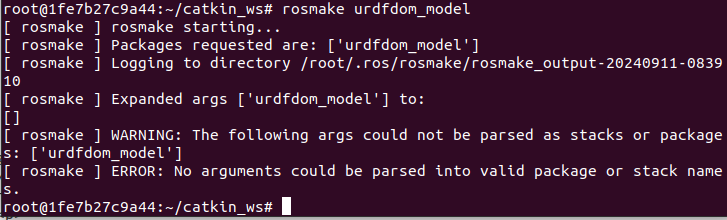
cd myrobot
mkdir urdf
cd urdf
nano my_robot.urdf
Вставил и сохранил код из вышеприведенного my_robot.urdfcd ../.. # перешел в catkin_ws rosmake urdfdom_model # Ошибка повторилась check_urdf my_robot.urdf #Ошибка cd myrobot/urdf check_urdf my_robot.urdf
Теперь все верно.
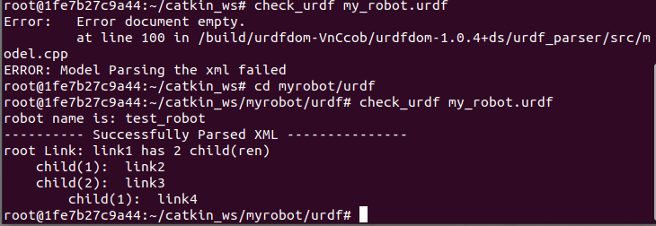 - Добавить размеры
Итак, теперь, когда у нас есть базовая древовидная структура, давайте добавим соответствующие размеры. Как вы заметили на изображении робота, опорная система координат (reference frame) каждого звена (link, выделен зеленым цветом) расположена в нижней части звена и совпадает с системой координат соединения (joint). Итак, чтобы добавить размеры в наше дерево, все, что нам нужно указать, - это смещение от link до стыка(ов) ее дочерних элементов. Для этого мы добавим поле <origin> к каждому стыку (joint).Давайте посмотрим на joint 2. joint 2 смещено в направлении Y от link1, немного смещено в отрицательном направлении X от link1 и повернуто на 90 градусов вокруг оси Z. Итак, нам нужно добавить следующий элемент
: <origin xyz="-2 5 0" rpy="0 0 1.57" />
Если вы повторите это для всех элементов, наш URDF будет выглядеть следующим образом:<robot name="test_robot"> <link name="link1" /> <link name="link2" /> <link name="link3" /> <link name="link4" /> <joint name="joint1" type="continuous"> <parent link="link1"/> <child link="link2"/> <origin xyz="5 3 0" rpy="0 0 0" /> </joint> <joint name="joint2" type="continuous"> <parent link="link1"/> <child link="link3"/> <origin xyz="-2 5 0" rpy="0 0 1.57" /> </joint> <joint name="joint3" type="continuous"> <parent link="link3"/> <child link="link4"/> <origin xyz="5 0 0" rpy="0 0 -1.57" /> </joint> </robot>Обновите свой файл my_robot.urdf и запустите его через синтаксический анализатор:
check_urdf my_robot.urdf
Я: изменил код и проверил, помоему никакой разницы с предыдущей проверкой нет. Наверное потому, что не показывает размеры- Завершение кинематики
Чего мы еще не указали, так это вокруг какой оси вращаются суставы. Как только мы добавим это, у нас фактически будет полная кинематическая модель этого робота! Все, что нам нужно сделать, это добавить элемент <axis> к каждому суставу. Ось определяет ось вращения в локальном кадре.Итак, если вы посмотрите на joint2, то увидите, что он вращается вокруг положительной оси Y. Итак, просто добавьте следующий xml-код к элементу joint2:
<axis xyz="0 1 0" />
Аналогично, соединение 1 вращается вокруг следующей оси:<axis xyz="-0.707 0.707 0" />
Обратите внимание, что рекомендуется нормализовать ось.Если мы добавим это ко всем суставам робота, наш URDF будет выглядеть следующим образом:
<robot name="test_robot"> <link name="link1" /> <link name="link2" /> <link name="link3" /> <link name="link4" /> <joint name="joint1" type="continuous"> <parent link="link1"/> <child link="link2"/> <origin xyz="5 3 0" rpy="0 0 0" /> <axis xyz="-0.9 0.15 0" /> </joint> <joint name="joint2" type="continuous"> <parent link="link1"/> <child link="link3"/> <origin xyz="-2 5 0" rpy="0 0 1.57" /> <axis xyz="-0.707 0.707 0" /> </joint> <joint name="joint3" type="continuous"> <parent link="link3"/> <child link="link4"/> <origin xyz="5 0 0" rpy="0 0 -1.57" /> <axis xyz="0.707 -0.707 0" /> </joint> </robot>Изменил my_robot.urdf, проверил.Вот и все, вы создали свое первое описание робота URDF! Теперь вы можете визуализировать файл urdf, используя graphiz:
urdf_to_graphiz my_robot.urdfи откройте созданный файл с помощью вашего любимого средства просмотра pdf:
evince test_robot.pdfЯ:
urdf_to_graphiz my_robot.urdf
Поскольку в моем контейнере не был установлен evince, то:
sudo apt update
sudo apt install evince
Далее:
evince test_robot.pdf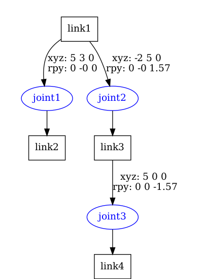
Теперь вы готовы перейти к следующему уроку и начать использовать парсер URDF в вашем коде на C++.
- Завершение кинематики
Parse a urdf file
В этом руководстве вы узнаете, как использовать синтаксический анализатор urdf- Reading a URDF file
Этот урок начинается с того места, на котором закончился предыдущий. У вас все еще должен быть свой my_robot.urdf Ниже приведен файл urdf с описанием робота: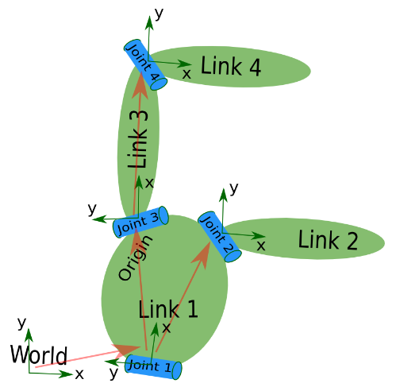
Давайте сначала создадим пакет с зависимостью от анализатора urdf в нашей песочнице:
cd ~/catkin_ws/src catkin_create_pkg testbot_description urdf cd testbot_description
Теперь создайте папку /urdf для хранения файла urdf, который мы только что создали:mkdir urdf cd urdf
Это следует из соглашения всегда сохранять URDF-файл вашего робота в пакете ROS с именем MYROBOT_description и во вложенной папке с именем /urdf. Другие стандартные вложенные папки пакета описания вашего робота включают /meshes, /media и /cad, например: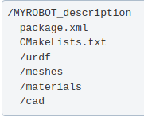
Далее скопируйте ваш файл my_robot.urdf в пакет и папку, которые мы только что создали:
cp /path/to/.../testbot_description/urdf/my_robot.urdf .
Я: перешёл в ~/catkin_ws/myrobot/urdf Затем:
cp my_robot.urdf ~/catkin_ws/src/testbot_description/urdfСоздайте папку src/ и запустите свой редактор, чтобы создать файл с именем src/parser.cpp
Я:
cd .. #перешёл в testbot_description
mkdir src
cd src
nano parser.cpp#include
Реальное действие происходит в строках 12-13. Здесь мы создаем объект синтаксического анализа и инициализируем его из файла, указав имя файла. Метод initFile возвращает значение true, если файл URDF был успешно проанализирован.#include "ros/ros.h" int main(int argc, char** argv){ ros::init(argc, argv, "my_parser"); if (argc != 2){ ROS_ERROR("Need a urdf file as argument"); return -1; } std::string urdf_file = argv[1]; urdf::Model model; if (!model.initFile(urdf_file)){ ROS_ERROR("Failed to parse urdf file"); return -1; } ROS_INFO("Successfully parsed urdf file"); return 0; } Теперь попробуем запустить этот код. Сначала добавьте следующие строки в ваш CMakeList.txt файл:
add_executable(parser src/parser.cpp) target_link_libraries(parser ${catkin_LIBRARIES})Соберите свой пакет и запустите его:cd ~/catkin_ws $ catkin_make $ .<path>/parser <path>my_robot.urdf # Example: ./devel/lib/testbot_description/parser ./src/testbot_description/urdf/my_robot.urdf
Я пытался выполнить: .src/testbot_description/src/parser src/testbot_description/urdf/my_robot.urdf и получал сообщение, что файл или директория не существует. Пока не выполнил, как в учебнике:
./devel/lib/testbot_description/parser ./src/testbot_description/urdf/my_robot.urdf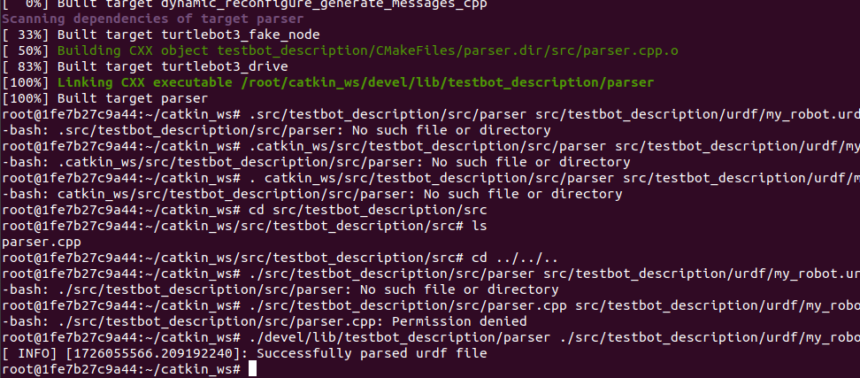
Использование robot state publisher на вашем собственном роботе
В этом руководстве объясняется, как вы можете опубликовать состояние вашего робота в tf, используя robot state publisher.Когда вы работаете с роботом, у которого много соответствующих систем координат, опубликовать их все в tf становится довольно сложной задачей. Robot state publisher - это инструмент, который выполнит эту работу за вас.
Программа robot state publisher поможет вам транслировать состояние вашего робота в библиотеку tf transform. Программа robot state publisher содержит внутреннюю кинематическую модель робота; таким образом, учитывая положение суставов робота, программа robot state publisher может вычислить и транслировать 3D-изображение каждого звена робота.
- Выполнение как нода ROS
- robot_state_publisher
Проще всего запустить robot state publisher в качестве узла. Для обычных пользователей рекомендуется использовать именно это. Для запуска robot state publisher необходимы две вещи:- Описание робота в формате urdf xml, загруженно на сервер параметров (Parameter Server).
- Источник, который публикует позиции суставов как sensor_msgs/JointState.
Топики, на которые подписаны: joint_states (sensor_msgs/JointState)
joint position informationПараметры:
robot_description (urdf map)
Описание робота в формате urdf xml. Доступ к нему осуществляется через `urdf_model::initParam`tf_prefix (string)
Установите префикс tf для публикации преобразований с учетом пространства имен. Более подробную информацию смотрите в разделе tf_prefix.publish_frequency (double)
Частота публикации состояния издателя, по умолчанию: 50 Гц. - Пример файла launch
Как только вы настроите описание робота в формате XML и источник информации о совместном местоположении, просто создайте файл запуска, подобный этому:<launch> <!-- Load the urdf into the parameter server. --> <param name="my_robot_description" textfile="$(find mypackage)/urdf/robotmodel.xml"/> <node pkg="robot_state_publisher" type="robot_state_publisher" name="rob_st_pub" > <remap from="robot_description" to="my_robot_description" /> <remap from="joint_states" to="different_joint_states" /> </node> </launch>
- robot_state_publisher
- Выполненять как библиотеку
Опытные пользователи также могут запускать robot state publisher как библиотеку из своего собственного кода на C++. После включения заголовка:
include <robot_state_publisher/robot_state_publisher.h>все, что вам нужно, - это конструктор, который использует дерево KDL
RobotStatePublisher(const KDL::Tree& tree);и теперь каждый раз, когда вы хотите опубликовать состояние своего робота, вы вызываете функции publishTransforms:
// publish moving joints void publishTransforms(const std::map<std::string, double>& joint_positions, const ros::Time& time); // publish fixed joints void publishFixedTransforms();Первый аргумент - это карта с названиями соединений и позициями соединений, а второй аргумент - это время, в которое были записаны позиции соединений. Ничего страшного, если карта не содержит всех названий соединений. Также допустимо, если на карте указаны названия некоторых соединений, которые не являются частью кинематической модели. Но обратите внимание, что если вы не сообщите издателю состояния соединения о некоторых соединениях в вашей кинематической модели, то ваше дерево tf будет неполным.
Start using the KDL parser
В этом руководстве вы узнаете, как создать дерево KDL из файла URDF
- Building the KDL parser
rosdep install kdl_parserЭто приведет к установке всех внешних зависимостей для kdl_parser. Чтобы собрать пакет, запустите:
rosmake kdl_parser - Using in your code
Чтобы начать использовать синтаксический анализатор KDL в вашем коде на C++, включите следующий файл:
#include <<kdl_parser/kdl_parser.hpp>Теперь можно действовать по-разному. Вы можете создать дерево KDL из urdf в различных формах:
- Из файла:
KDL::Tree my_tree; if (!kdl_parser::treeFromFile("filename", my_tree)){ ROS_ERROR("Failed to construct kdl tree"); return false; }Чтобы создать файл PR2 URDF, выполните следующую команду:
rosrun xacro xacro.py `rospack find pr2_description`/robots/pr2.urdf.xacro > pr2.urdf - Из сервера параметров:
KDL::Tree my_tree; ros::NodeHandle node; std::string robot_desc_string; node.param("robot_description", robot_desc_string, std::string()); if (!kdl_parser::treeFromString(robot_desc_string, my_tree)){ ROS_ERROR("Failed to construct kdl tree"); return false; } - From an xml element:
KDL::Tree my_tree; TiXmlDocument xml_doc; xml_doc.Parse(xml_string.c_str()); xml_root = xml_doc.FirstChildElement("robot"); if (!xml_root){ ROS_ERROR("Failed to get robot from xml document"); return false; } if (!kdl_parser::treeFromXml(xml_root, my_tree)){ ROS_ERROR("Failed to construct kdl tree"); return false; } - From a URDF model:
KDL::Tree my_tree; urdf::Model my_model; if (!my_model.initXml(....)){ ROS_ERROR("Failed to parse urdf robot model"); return false; } if (!kdl_parser::treeFromUrdfModel(my_model, my_tree)){ ROS_ERROR("Failed to construct kdl tree"); return false; }
- Из файла:
Using urdf with robot_state_publisher
В этом руководстве приведен полный пример модели робота с URDF, использующей robot_state_publisher. Сначала мы создаем модель URDF со всеми необходимыми компонентами. Затем мы пишем узел, который публикует JointState и преобразует его. Наконец, мы соединяем все детали воедино.
- Create the URDF File
Вот файл URDF для 7-канальной модели, приблизительно соответствующей R2-D2. Сохраните следующую ссылку: model.xml на свой компьютер. - Публикация состояния
Теперь нам нужен способ указать, в каком состоянии находится робот. Для этого мы должны указать все три соединения и общую одометрию. Начните с создания пакета:
cd catkin_ws/src
catkin_create_pkg r2d2 roscpp rospy tf sensor_msgs std_msgsЗатем запустите свой любимый текстовый редактор и вставьте следующий код в файл src/state_publish:
#include <string> #include <ros/ros.h> #include <sensor_msgs/JointState.h> #include <tf/transform_broadcaster.h> int main(int argc, char** argv) { ros::init(argc, argv, "state_publisher"); ros::NodeHandle n; ros::Publisher joint_pub = n.advertise<sensor_msgs::JointState>("joint_states", 1); tf::TransformBroadcaster broadcaster; ros::Rate loop_rate(30); const double degree = M_PI/180; // robot state double tilt = 0, tinc = degree, swivel=0, angle=0, height=0, hinc=0.005; // message declarations geometry_msgs::TransformStamped odom_trans; sensor_msgs::JointState joint_state; odom_trans.header.frame_id = "odom"; odom_trans.child_frame_id = "axis"; while (ros::ok()) { //update joint_state joint_state.header.stamp = ros::Time::now(); joint_state.name.resize(3); joint_state.position.resize(3); joint_state.name[0] ="swivel"; joint_state.position[0] = swivel; joint_state.name[1] ="tilt"; joint_state.position[1] = tilt; joint_state.name[2] ="periscope"; joint_state.position[2] = height; // update transform // (moving in a circle with radius=2) odom_trans.header.stamp = ros::Time::now(); odom_trans.transform.translation.x = cos(angle)*2; odom_trans.transform.translation.y = sin(angle)*2; odom_trans.transform.translation.z = .7; odom_trans.transform.rotation = tf::createQuaternionMsgFromYaw(angle+M_PI/2); //send the joint state and transform joint_pub.publish(joint_state); broadcaster.sendTransform(odom_trans); // Create new robot state tilt += tinc; if (tilt<-.5 || tilt>0) tinc *= -1; height += hinc; if (height>.2 || height<0) hinc *= -1; swivel += degree; angle += degree/4; // This will adjust as needed per iteration loop_rate.sleep(); } return 0; } - Launch файл
Этот файл запуска предполагает, что вы используете имя пакета "r2d2" и имя узла "state_publisher", и вы сохранили этот urdf в пакете "r2d2".<launch> <param name="robot_description" command="cat $(find r2d2)/model.xml" /> <node name="robot_state_publisher" pkg="robot_state_publisher" type="robot_state_publisher" /> <node name="state_publisher" pkg="r2d2" type="state_publisher" /> </launch> - Просмотр результатов
Сначала нам нужно отредактировать CMakeLists.txt в пакете, в котором мы сохранили приведенный выше исходный код. Не забудьте добавить зависимость tf в дополнение к другим зависимостям:find_package(catkin REQUIRED COMPONENTS roscpp rospy std_msgs tf)
Обратите внимание, что roscpp используется для анализа кода, который мы написали, и создания узла state_publisher. Нам также нужно добавить следующее в конец CMakelists.txt, чтобы сгенерировать узел state_publisher.:include_directories(include ${catkin_INCLUDE_DIRS}) add_executable(state_publisher src/state_publisher.cpp) target_link_libraries(state_publisher ${catkin_LIBRARIES})Теперь мы должны перейти в каталог рабочей области и собрать его с помощью:
catkin_makeТеперь запустите пакет (при условии, что наш файл запуска называется display.launch).:
roslaunch r2d2 display.launchЗапустите rviz, выполнив команду в новом терминале:
rosrun rviz rvizВыберите odom в качестве фиксированной системы координат (fixed frame) (в разделе Global Options). Затем выберите "Add Display" и добавьте Robot Model Display и TF DisplayTF (см. http://wiki.ros.org/rviz/UserGuide).